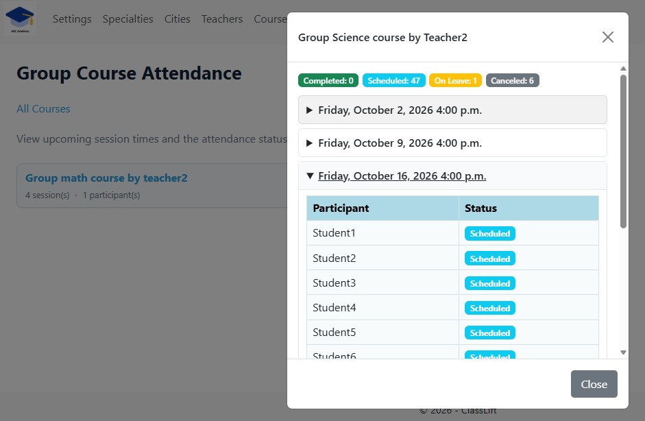
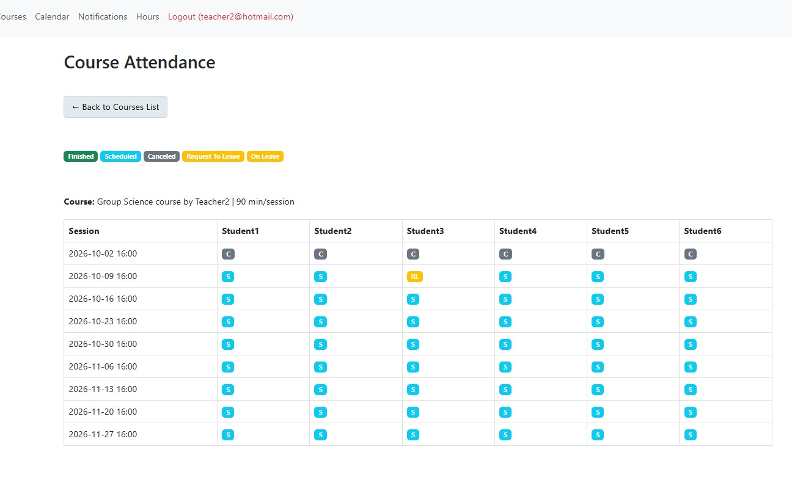

Keep Course Attendance Clear and Organized
Give staff and teachers the attendance visibility they need — without keeping separate records.
Attendance is easy to track when you are teaching one student.
But group courses are different.
Multiple students attend multiple sessions, schedules change, students may take leave, and both teachers and staff may need to understand what is happening.
ClassLift keeps attendance connected to the course, its sessions, and its participants — giving your team a clearer way to follow student participation.
Give Staff a Clear View of Group Course Attendance
For education businesses, attendance is not only something teachers need to see.
Staff may also need visibility into what is happening across group courses.
ClassLift gives staff a course-level view where they can review upcoming sessions and see the participation status of students for individual classes.

This gives your team better visibility into course activity without having to ask the teacher for updates or maintain a separate attendance record.
Give Teachers a Practical Attendance View
Teachers need a different perspective.
When teaching a group course, it is useful to see students and sessions together so you can quickly understand participation across the course.
ClassLift gives teachers a dedicated Course Attendance view that brings those records together.

Instead of checking students one at a time, teachers get a clear overview of the group and can quickly see how participation has changed from one session to the next.
Track More Than Just Present or Absent
Real tutoring schedules are not always as simple as “present” or “absent.”
Sessions may be scheduled, completed, or canceled. Students may also have leave-related changes that affect their participation.
ClassLift keeps these different situations visible within the attendance record, helping teachers and staff understand the context behind each session.
That becomes increasingly useful for courses running over several weeks or months.
Keep Teachers and Staff on the Same Page
Attendance should not live in one teacher’s notebook while administrative staff maintain a completely different record.
ClassLift helps keep course participation connected within the same system while giving different members of your team the view that is useful for their role.
Staff get visibility into course and session activity.
Teachers get a practical view of attendance across their students and lessons.
And your tutoring business gets a more consistent record of what happened throughout the course.
One Course. One Attendance Record. Better Visibility.
As your tutoring business grows, keeping teachers and staff aligned becomes increasingly important.
ClassLift helps keep attendance organized across students, sessions, and courses — so your team can spend less time piecing together records and more time supporting students.
Clear for teachers. Visible to staff. Connected to the course.
Ready to simplify attendance tracking?